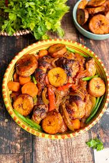

Recette de Dj Poulet

Description
Le Dj poulet, née dans les années 1980 dans les circuits du Cameroun. à l'origine c'était un plat d'un certain standing reservé au personne de la hautes société.
Ingredients
- Plantin mûr
- Poulet
- Condiments
- Sel
- Huile raffinée
steps
epulcher le plantin et le découper
faire frire ce plantin
nettoyer le poulet, bouilllir et faire frire
melanger le tout au feu avec les conditments et attendre la cuison
Home